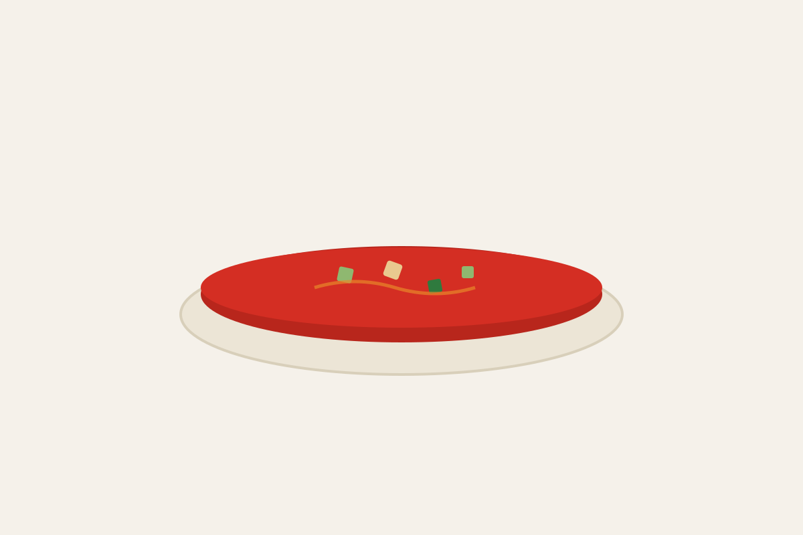

Gazpacho andaluz tradicional

El gazpacho andaluz es la sopa fría más famosa de España: tomate maduro, pimiento, pepino, ajo, aceite de oliva virgen extra y un toque de vinagre, triturados y servidos bien fríos. Sin cocción, listo en 15 minutos y perfecto para los días de calor.
En esta receta de gazpacho tradicional te explicamos las proporciones exactas, el orden correcto para triturar y emulsionar, y los trucos para conseguir un gazpacho fino, de color rojo intenso y sabor equilibrado.
La clave de un buen gazpacho es el tomate. Usamos el Oblongo de La Cañada-Níjar: muy carnoso, de rojo intenso y con un sabor menos ácido que otras variedades, por lo que da un gazpacho dulce y redondo sin necesidad de corregirlo.
- Tiempo de preparación
- 15 minutos
- Reposo en frío
- 2 horas
- Raciones
- 4 personas
- Dificultad
- Fácil
- Categoría
- Entrante / Sopa fría
- Calorías
- aprox. 255 kcal por ración
Ingredientes del gazpacho para 4 personas
Recomendamos el Oblongo de La Cañada-Níjar bien maduro: su carne firme, su color rojo intenso y su baja acidez dan un gazpacho especialmente dulce y vistoso.
- 1 kg de tomate Oblongo de La Cañada-Níjar muy maduro
- 1 pimiento verde italiano (unos 100 g)
- ½ pepino (unos 150 g)
- 1 diente de ajo pequeño, sin el germen
- 60 g de pan del día anterior (opcional)
- 80 ml de aceite de oliva virgen extra
- 2 cucharadas de vinagre de Jerez
- 1 cucharadita de sal
- 100-200 ml de agua muy fría, al gusto
- Para servir: dados de pepino, pimiento y picatostes
Cómo hacer gazpacho andaluz paso a paso
Lavar y trocear las verduras
Lavar los tomates, el pimiento y el pepino. Retirar el pedúnculo de los tomates y cortarlos en cuartos. Quitar las semillas al pimiento, pelar el pepino y trocear ambos. Pelar el ajo y retirarle el germen.
Remojar el pan
Si usas pan, ponlo en remojo 5 minutos con un poco de agua fría y escúrrelo ligeramente. Aporta cuerpo y una textura más cremosa.
Triturar las verduras
Poner en el vaso de la batidora los tomates, el pimiento, el pepino, el ajo, el pan, la sal y el vinagre. Triturar a máxima potencia durante 2-3 minutos, hasta obtener una crema lisa.
Emulsionar con el aceite
Con la batidora en marcha a velocidad media, añadir el aceite de oliva en un hilo fino. Así se emulsiona y el gazpacho queda más cremoso y brillante.
Colar y ajustar la textura
Pasar el gazpacho por un colador fino para eliminar pieles y semillas. Añadir agua fría poco a poco hasta la textura deseada y rectificar de sal y vinagre.
Enfriar y servir
Refrigerar al menos 2 horas en una jarra tapada para que los sabores se asienten. Remover antes de servir y acompañar con dados de pepino, pimiento y picatostes.
Trucos para un gazpacho perfecto
- Cuanto más maduro y rojo esté el tomate, más dulce y vistoso será el gazpacho.
- Añade el aceite siempre al final y en hilo: si lo echas de golpe, el gazpacho se vuelve anaranjado y menos cremoso.
- No le pongas hielo al servir: aguaría el sabor. Mejor enfriar bien en la nevera.
- Retira el germen del ajo para que no repita ni domine sobre el tomate.
Variantes del gazpacho
- Gazpacho de sandía o de fresa: sustituye 250 g de tomate por la fruta para una versión más dulce y veraniega.
- Gazpacho sin gluten: omite el pan y añade 2 cucharadas más de aceite para mantener la cremosidad.
- En vasito como aperitivo, con un chorrito de aceite y un tomate Cereza de La Cañada-Níjar partido por la mitad.
Valores nutricionales del gazpacho por ración
| Energía | 255 kcal |
|---|---|
| Grasas | 19 g |
| Hidratos de carbono | 17 g |
| de los cuales azúcares | 8 g |
| Proteínas | 4 g |
| Fibra | 4 g |
| Sal | 1,6 g |
Preguntas frecuentes sobre el gazpacho
¿Qué tomate es mejor para hacer gazpacho?
Un tomate muy maduro, carnoso y de color rojo intenso. Recomendamos el Oblongo de La Cañada-Níjar: su sabor es menos ácido que el de otras variedades, así que el gazpacho queda dulce y equilibrado sin tener que corregirlo.
¿Hay que pelar los tomates para el gazpacho?
No es necesario si cuelas el gazpacho al final: el colador retiene pieles y semillas. Si prefieres no colarlo, escalda los tomates 20 segundos en agua hirviendo, enfríalos en agua con hielo y la piel saldrá sola.
¿Se puede hacer gazpacho sin pan?
Sí. El pan solo aporta cuerpo; sin él obtienes un gazpacho más ligero y apto para celíacos. Para compensar, añade un par de cucharadas más de aceite de oliva al emulsionar.
¿Cuánto tiempo dura el gazpacho en la nevera?
Entre 2 y 3 días en una jarra o botella bien cerrada. Es normal que se separe un poco: basta con removerlo o agitarlo antes de servir. Se puede congelar, pero conviene volver a batirlo tras descongelarlo.
¿Qué diferencia hay entre gazpacho y salmorejo?
El gazpacho lleva tomate, pimiento, pepino y ajo y es líquido, para beber o tomar en cuenco. El salmorejo cordobés solo lleva tomate, pan, ajo, aceite y sal, con mucho más pan, por lo que es una crema espesa que se sirve con huevo duro y jamón.
¿Por qué mi gazpacho queda de color naranja?
Suele deberse a añadir mucho aceite de golpe o a usar tomates poco maduros. Emulsiona el aceite al final y en hilo fino, y usa tomates de rojo intenso como el Oblongo de La Cañada-Níjar para un color rojo vivo.
Más recetas

Consigue el tomate ideal para tu gazpacho
Para esta receta recomendamos el Oblongo de La Cañada-Níjar.
Buscar puntos de ventaDescubrir todas las variedades · Sobre la Indicación Geográfica Protegida